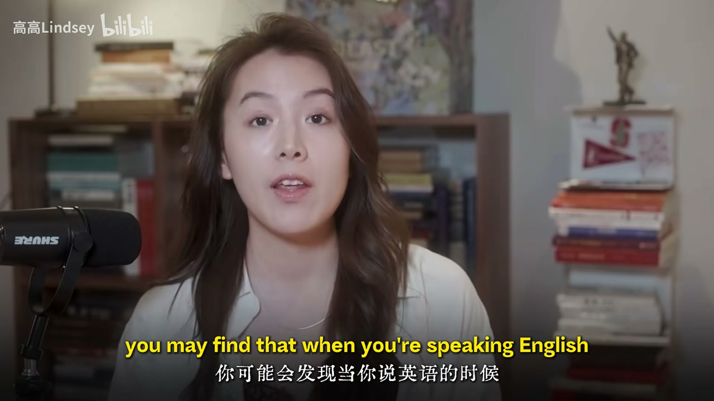
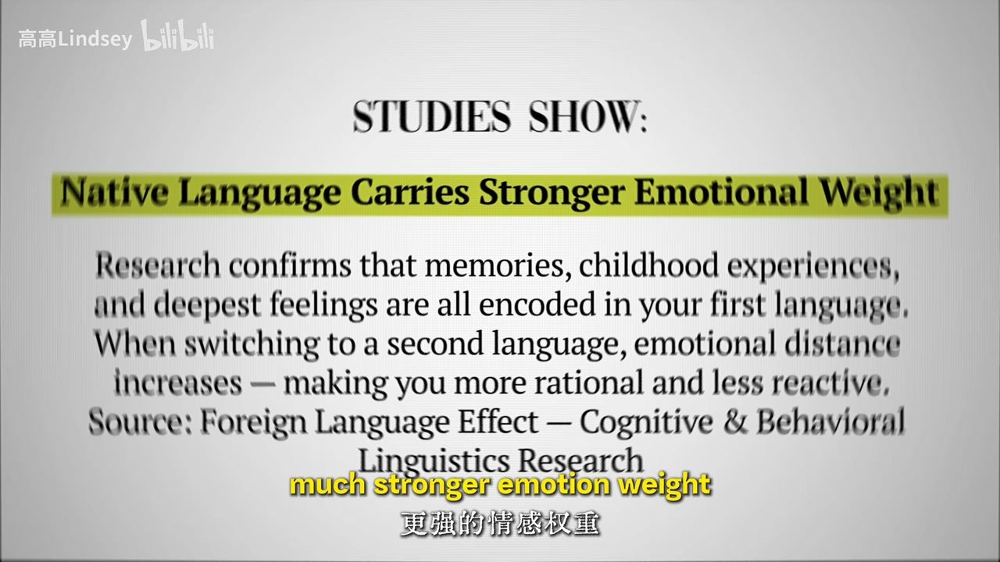
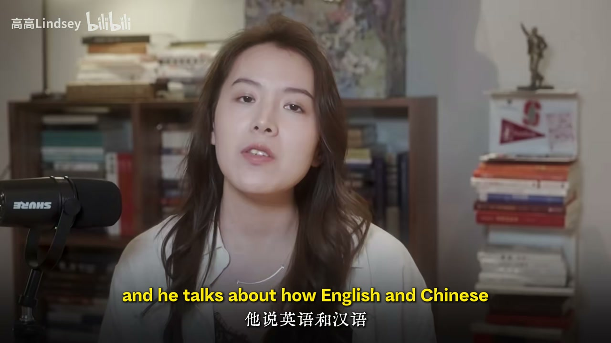
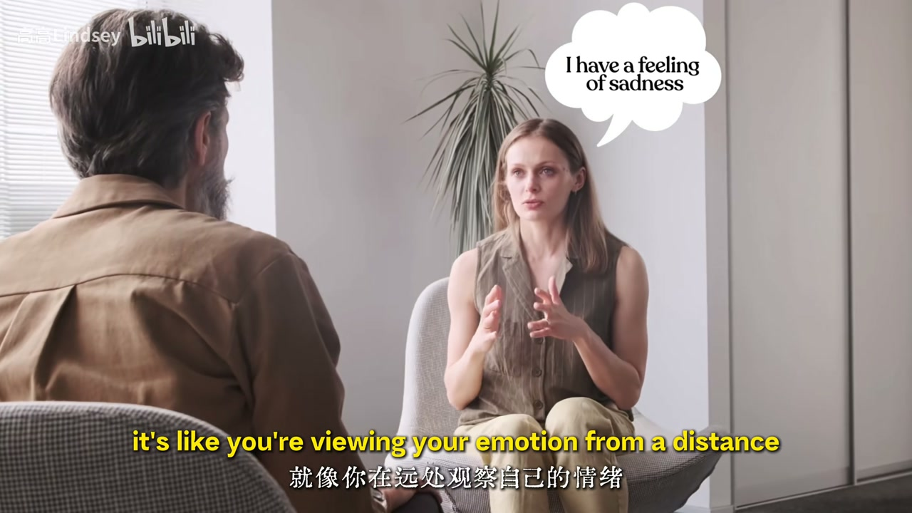
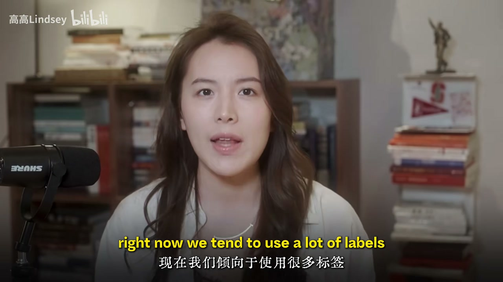
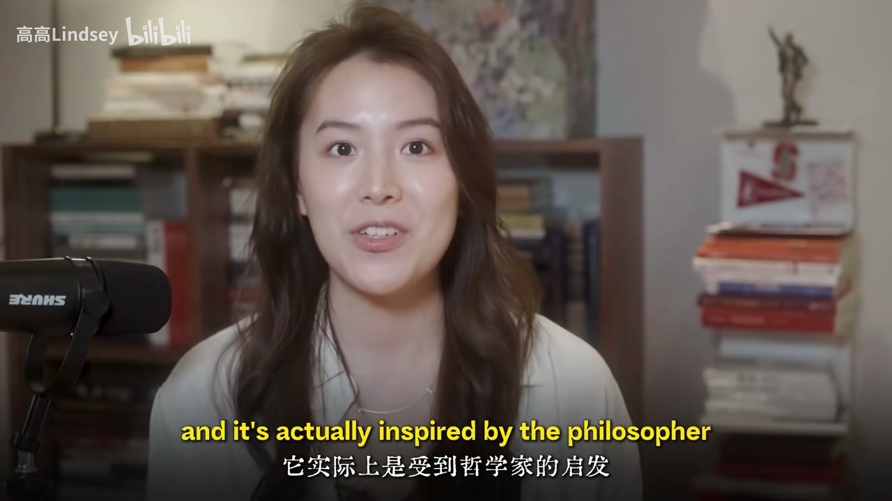

内容要点
全英短片谈「语言如何塑造思维」：说英语时常更理性、少情绪反应，背后是外语效应（母语承载更强情绪记忆）与英汉差异（英语更爱把过程名词化）。后半连接算法偏爱极端标签与 Lisa Feldman Barrett 的情绪粒度研究——具体描述感受比贴「内耗/愤怒」标签更能减少冲动。收束于维特根斯坦：语言的边界即世界的边界。口播为英文，正文为简体解读；专名 ASR 已校正（Wittgenstein、Barrett、Perry Link）。
知识结构
母语情绪权重更大；切换二语→与情绪拉开距离，更开放理性。
Perry Link：英语常把过程变成「可打击的事物」；名词多→更盯具体物而非情绪流。
算法爱极端关键词；具体描述身体/念头 vs 贴单一标签；粒度高→少冲动、身心更好。
学语言不是为了考试，是多套思维模板；语言窄则世界窄。
内耗常被「一个词」放大；换语言或换更细的描述，等于换一套处理情绪的模板。
00:00-00:40说英语时像换了一个人：外语效应
开场承认：语言能塑造心智，说话方式会影响思维方式。说英语时你可能像另一个人——更逻辑、更关注事情而非情绪感受。
第一原因是研究者所称的外语效应（foreign language effect）：母语承载更强情绪重量，童年与深层感受都编码在其中；切到二语，自然与那些情绪拉开一点距离，「更开放、更理性、更少反应性」。


00:40-01:40英汉差异：把过程变成「东西」
第二点：说英语时更注意具体事物。引用 Perry Link《Anatomy of Chinese》（哈佛大学出版社）：英语常把过程名词化——例如 inflation 变成可以「打击/战胜」的东西，尽管它本质是时间中的过程；中文更常以动作与运动表达同一观念。
多用名词时，你可能更盯「具体物」而非情绪流：说 “I have a feeling of sadness” 像从远处看待情绪，因而更理性。学不同语言，等于多几套处理情绪与问题的模板。

01:40-03:25标签、情绪粒度与语言边界
当下更容易极端与极化：极端标签更易被算法索引。发帖盯标题与标签、用一个关键词引流，会强化「单字定义体验」的机制；但人类感受无法被一个词识别干净。对比：只喊「内耗/愤怒/内卷」，vs 「我不同意他的话，脑子有点乱，体温在升」——更具体就不那么容易被坏消息点燃。
连接到情绪粒度（emotional granularity，神经科学家 Lisa Feldman Barrett，东北大学）：能更具体描述情绪的人更少冲动反应，身心健康也更好。收束：日常语言影响力大；模型灵感来自维特根斯坦——「我的语言的边界意味着我的世界的边界」：语言窄，世界就窄。



完整转录（42段）
以下文本由 Whisper medium 模型自动转录，可能存在少量识别误差，已尽可能修正。
There is something that I have to admit. Language can shape your mind and the way you speak can
definitely influence how you think. It's very obvious that you may find that when you're
speaking English, you're a totally different person from one who speaks your mother tongue.
Maybe you're more logical and you pay more attention to things instead of emotions and
feelings. There are basically two reasons. The first one is what researchers call the
foreign language effect. Studies show that your native language carries much stronger emotion
weight. Your memories, your childhood, your deepest feelings are all encoded in it. So when
you switch to a second language, you naturally get a little more distance from those emotions.
You become more open, more rational, less reactive. And the second thing is that when
you're speaking English, you pay more attention to concrete things. There's actually a book called
Anatomy of Chinese by Perry Link, published by Harvard University Press, and he talks about how
English and Chinese treat the world very differently. The English we turn processes into things.
For example, inflation becomes something you can fight or defeat, even though it's really just a
process happening over time. But in Chinese, that same idea will be expressed more through actions
and movement. So if you're using more nouns, you may pay more attention to the concrete things
instead of emotions. You may say, I have a feeling of sadness, even though you are really sad. But
if you say, I have a feeling of sadness, it's like you're viewing your emotion from a distance and
you'll be more rational. And that difference in language might actually shape how we think.
I mean, learning different languages gives you different ways of thinking. Like you have different
templates and models to process your emotions or deal with the problems in your life. So that's why
we think learning language is not all about taking exams or something. It's unconsciously making you
a better person by influencing you unconsciously. This is the first thing about nouns and verbs.
And the second thing is that we are more likely to be extreme and polarizing right now. We tend
to use a lot of labels because extreme and polarizing identifiers are more indexable by
the algorithm. When we post something on social media, we'll pay a lot of attention to our title
or our tags. We try to attract people with just one keyword. You need to grab keywords in order
to attract more audience, just like that. And that tends to be the mechanism right now. If you want
to be influential, if you want to go viral, you need to pay a lot of attention to the single word
that you're using. But actually human feelings and experiences cannot be identified by just one
word, right? Let's compare two different ways of expressing yourself. The first thing is to just
use a very polarizing word like neha or angry or involution. Or the second thing is that we say,
I don't agree with what he said and my mind feels a little bit messy and I notice my body temperature
going up. So if you can be more specific with your language instead of just slapping a label on it,
you will be less easily triggered by bad news or harsh words. This actually connects to your
concept called emotional granularity, researched by neuroscientist Lisa at Northeastern University.
Her studies show that people who can describe her emotions or his emotions with more specification
are less likely to react impulsively and actually have better mental and physical health overall.
So it's not just about sounding more articulate, it's genuinely changes how your brain processes
what you feel. That's why I think language we use every day is so influential. That's why my model
is always and is actually inspired by the philosopher Ludwig Wiggenstein, who said,
the limits of my language means the limits of my world. Because if you're narrow in your use of
language, you're narrow in your world.